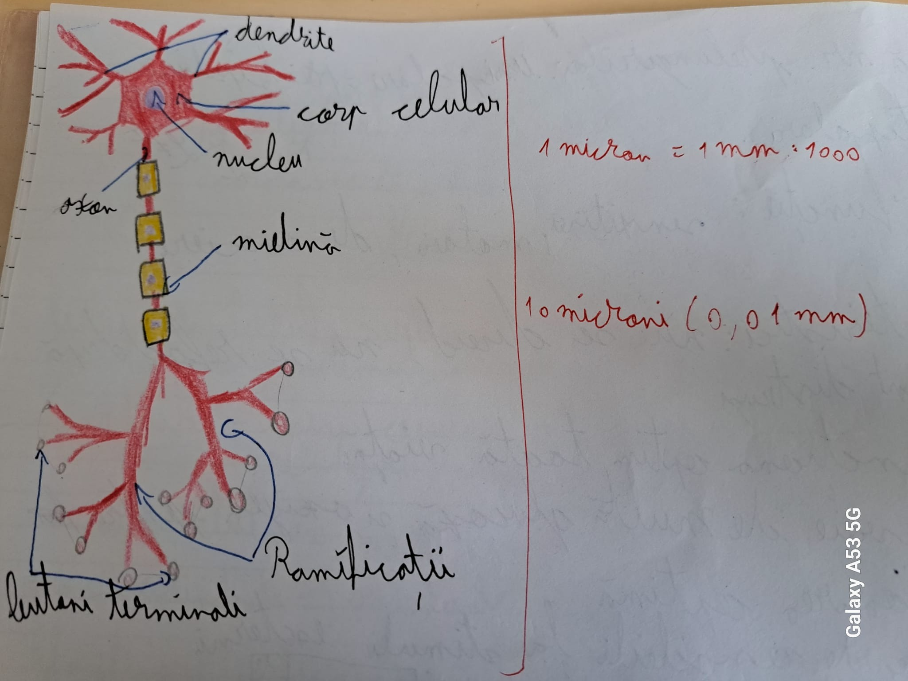

Inapoi
Facut de Bogdan Serban
Sa incepem de la inceput,
Sistemul nervos se ocupa cu coordonarea actitivatilor organismului prin mesaje transmise sub forma de inpuluri nervoase
- ALCATUIRE
- tesut nervos: Substanta alba si substanta cenusie care sunt formati din celule nervoase (NEURONII)
- tesut conjunctiv: format din celule gliale (de 10 ori mai multe decat neuronii, au rol de hranire si protectie a neuronilor)
- vase de sange
- Clasificarea sistemului nervos (S.N)
- Dupa localizare:
- Sistemul nervos central(S.N.C)
Format din encefal si maduva spinarii
- Sistemul nervos periferic(S.N.P)
Format din nervi cranieni, nervi spinali si ganglioni nervosi
- Dupa Functie:
- Sistemul nervos somatic (S.N.S) (DE RELATIE)
Face legatura dintre organism si stimuli
- Sistemul nerbos vegetativ (S.N.V) (DE NUTRITIE)
Coordoneaza activitatea organelor
Acum, sa continuam cu NEURONUL
Neuronul-Celula nervoasa- Unitatea structurala si functionala a sistemului nervos
Alcatuire:
- Corp celular, nucleu, citoplasma
- Prelungiri: Axon, dendrite
Corpii celulari = Substanta cenusie
Axoni + Dendrite = Substanta alba,cai de conducere
Clasificare
- Dupa forma:
-Stelata,ovala, piramidala, fusiforma
- Dupa numarul prelungirilor:
Unipolari, Bipolari, Multipolari
- Dupa functie
Senzitivi, Motori, De asociere
Caracteristici
- Nu se divid, Nu se refac dupa ce sunt distrusi
- Pot functiona optim toata viata
- Au nevoie de multa glucoza si oxigen pentru functionarea optima
- Sunt foarte sensibili la stimuli externi
- Se leaga intre ei prin sinapse
Imagine:

Mai avem doar Creierul(Encefal)
Localizare: Cutia craniana
Are 1400 grame, se afla in cutia craniana si este invelit de meninge
Alcatuire:
- Trunchiul celebral
- Creierul mic(cerebelul)
- Diencefal
- Creierul mare(emisferele celebrale)
Trunchiul celebral
Are forma de trunchi de con si este situat in prelungirea maduvii spinarii sub emisferele celebrale
Alcatuire
- Mezencefal
- Puntea lui Varolio
- Blulbul Rahidian
Alcatuire interna
- Substanta alba-la periferie
- Substanta cenusie-la interior -> Nuclei
Nucleii de substanta cenusie se formeaza datorita incrucisarii fibrelor ascendente si descendente.
Nuclei:
- Senzitivi
- Motori
- Vegetativi
- Proprii
Centri nervosi din trunchiul celebral (TC) sunt conectati cu receptorii si efectorii de la nivelul capului prin 10 perechi de nervi cranieni (10 din 12)
Reflexele care isi au centrii la nivelul TC sunt inascute (Neconditionale)- Adica automate, ca respiratia (cand nu ne gandim la respiratie)
Cerebelul (Creierul mic)
Situat sub lobii occipitali ai emisferelor cerebrale.
dorsal fata de trunchiul ccerebral de care se leaga prin 3 perechi de pendiculi cerebelosi (cordoane de substanta alba)
Alcatuire
Format din 2 emisfere cerebeloase unite printr-o portiune mijlocie ingusta numita vermis
Alcatuire interna
- Substanta cenusie
- Scoarta cerebeloasa (la ext)
- Nuclei cerebelosi (la int)
- Substanta alba la interior de forma coroanei unui arbore
Functii:
- Asigurarea mentinerii echilibrului pe baza informatiilor primite de la urechea interna
- Controleaza pozitia corpului pe baza informatiilor primite de la propriceptori
- Asigura precizia miscarilor comandate de scoarta cerebrala
Diencefalul
Localizat in continuarea trunchiului cerebral, fiind partial acoperit de emisferele cerebrale
Prezinta urm regiuni ce formeaza nuclei:
- TALAMUS
- EPITALAMUS
- METATALAMUS
- HIPOTALAMUS
Creierul mare
- Cea mai mare parte a encefalului
- Format din 2 emisfere celebrale separate printr-un sant interemisferic si unite prin punti de substanta alba
SANTUL INTEREMISFERIC ESTE LOCALIZAT INTRE CELE 2 PARTI ALE CREIERULUI (STANGA SI DREAPTA)
Suprafata emisferelor sunt alcatuite din:
- Santui adanci care delimiteaza lobii: frontal, parietal, temporal, ocipital
- Santuri mai putin adanci care delimiteaza girusurile sau circumvolutiunile cerebrale (intre santurile din creier)
cu rol de amari suprafata emisferelor
Alcatuire interna
- substanta cenusie (face parte din 40% din alcatuirea interna)
- scoarta cerebrala - la exterior (arii: senzitivi, motori, de asotiatie)
- nuclei bazali (corpii striati) la int
- substanta alba - se alfa sub scoarta cerebrala (face parte din 60% din alcatuirea interna)
Scoarta cerebrala are o grosime de 1,2 mm si o suprafata de 2200 cm2 si contine aproximativ 18 de miliarde de neuroni